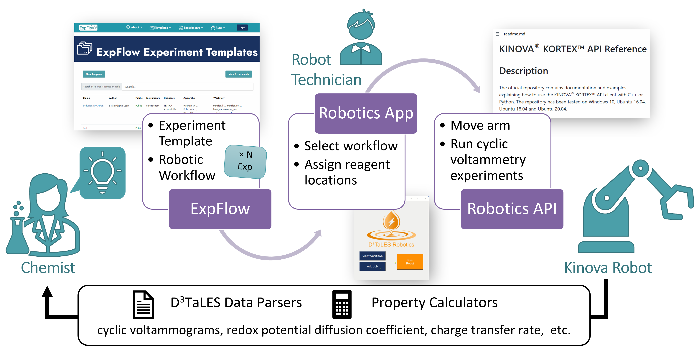

Terminology and Structure
Experiments and Workflows
There are several terms related to experimental procedures. ExpFlow Templates and Robotic Workflows are generated in the ExpFlow software and serve to outline the experimental procedure. (For more on ExpFlow Templates and Robotic Workflows, see ExpFlow Robotic Workflows.) When a downloaded ExpFlow Robotic Workflow is loaded through the Robotics App, it is translated into a FireWorks-based Workflow consisting of Experiments (sets of FireWorks Fireworks), which consist of Actions (FireWorks Firetasks). (For more on the Fireworks structure, see Module - Fireworks.)
Key terms:
ExpFlow Template: Generic procedure outline for a single experiment created on ExpFlow
ExpFlow Robotic Workflow: Specific procedure based on an ExpFlow template. It may consist of many parallel experiments, all with the same genreric Template procedure but differing in a couple parameters. This is also create on ExpFlow and can be downloaded as a JSON file.
Workflow (FireWorks Workflow): The FireWorks workflow object derived from a loaded ExpFlow Robotic Workflow.
Experiment: A series of actions that is analogous to a single experiment from the ExpFlow Robotic Workflow (based on the original ExpFlow Template).
Set of Actions (FireWorks Firework): A FireWorks firework may contain one or more actions from the original ExpFlow Template & Robotic Workflow. These are often grouped by categories.
Action (FireWorks Firetask): A FireWorks firetask corresponds directly with an action from the original ExpFlow Template & Robotic Workflow. Examples include
DispenseLiquid,MeasureDensity,RunCV,DataProcessor, etc.
Software Setup
Key terms:
ExpFlow: A web-based, Django-based software for researchers to encode experimental procedures through an intuitive user interface
FireWorks: External software used to manage robotic actions and jobs. It is used in defining, managing, and executing workflows and enables robotic multi-tasksing. (more info here)
Robotics App: Robotics App (code hosted in
GUIdirectory) for loading file-based ExpFlow Robotic Workflows to the FireWorks management system.Robotics API: Python code package used to define FireWorks workflows, fireworks, and firetasks as well as interact with the robot and robotic system hardware.
Robotics Workstation: The PC computer situated with the robotic hardware setup. This workstation hosts the robotics Robotics App, is connected to all the robotic hardware, and is where the Robotics API operates.
A researcher first builds an Robotic Workflow on ExpFlow. The researcher then downloads the Robotic Workflow to the local robotics computer. Here, through the Robotics Robotics App, the researcher loads the workflow and assigns reagent locations in the robot space. This step requires human actions as a safety measure to ensure that robotic experiments have human supervision. Finally, the Robotics API translates the loaded workflow into robotic actions (which are managed through the Fireworks software). Through the local robotics app, the researcher may launch robotic actions to perform the electrochemistry experiment and complete subsequent data processing.
Hardware Setup
Stations:
Liquid Dispensing Pumps: Four pumps and tubing system for dispensing solvents / solutions
Balance: Balance for weight measurements with vial holder
Sir Plate: Stir plate for mixing solutions. The Robotic API turns the plate on and off; the stir rate must be manually set before starting the experiment. The experiment vials must contain stir bars!
Grid Vial Stand: Home locations for all experiment vials. Black labels at the base of each holder denote the name of the vial based in that holder.
Vial Elevators: Elevators to precisely raise vials to electrodes and hold vials during measurements so the robot can complete other tasks.
Potentiostats: CHI potentiostat instruments for performing electrochemical measurements.
Kinova Robotic Arm: The robot :)